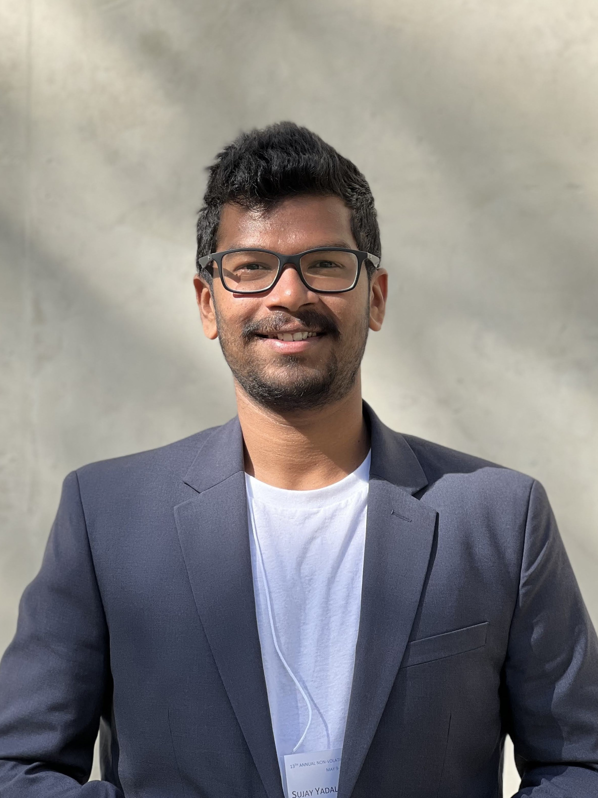

Sujay Yadalam
CV |
LinkedIn |
Google Scholar |
GitHub

sujayyadalam AT cs.wisc.edu
I am a postdoc at UT Austin working on LDOS. I completed my PhD in Computer Sciences from the University of Wisconsin-Madison. I was part of the SCAIL research group led by Prof. Michael Swift.
Prior to pursuing my graduate studies, I spent a year as a Research Assistant at the Indian Institute of Science (IISc) advised by Prof. Arkaprava Basu and Prof. Vinod Ganapathy.
I obtained my bachelor's degree in Electronics and Communication (ECE) from PES University.
News
- Jan 2026: I will be teaching CS395T Principles of Learned Systems at UT.
- Sep 2025: Successfully defended my dissertation 'Architectures for heterogeneous memory and storage hierarchies in modern datacenters'.
- Sep 2025: Our work on tiering parameter tuning has been accepted at DIMES'25, and work on observable communication in Learning Directed Operating Systems has been accepted at PACMI'25.
- May 2025: Our paper on guardrails for ML policies in the OS will be presented at HotOS'25.
- May 2024: I will be teaching CS537 (Intro to OS) this summer!
- May 2024: Awarded Lawrence H. Landweber NCR Fellowship for 2024-2025.
- Apr 2023: Presented BypassD at ASPLOS '24, San Diego.
- Aug 2023: Passed my PhD preliminary examination! Yay!
- Jun 2023: Completed a successful internship at Microsoft!
- Mar 2023: Aditya Kamath and I presented our idea on using LLMs in Operating Systems at WACI (Wild And Crazy Ideas) during ASPLOS 2023. Paper Code
- May 2022: I am interning at Microsoft Research with Stefan Saroiu and Alec Wolman.
- May 2022: Attended NVMW'22 at San Diego. Presented ASAP.
- Apr 2022: Presented ASAP at HPCA '22 (virtual).
- Mar 2022: Presented SwiftCore (ongoing work) at YArch '22. Attendend ASPLOS '22 at Lausanne, Switzerland.
- Dec 2021: Passed my PhD qualifying exam. Yaay!
- May 2021: I will be interning at VMware Research in the summer, I will be working with Jayneel Gandhi.
- Jan 2021: SGXL will be in the 1st issue of TACO in 2021.
Read more ...
Research interests
My research interests include computer architecture and systems broadly.
During my PhD, I have focused on designing system software and architectures for new and upcoming memory and storage technologies such as Non-Volatile Memory, low-latency SSDs and CXL technology.
I have a keen interest in hardware-software co-designs. I believe that they present significant performance and efficiency opportunities that are unavailable without crossing the boundary between the two layers.
Selected Publications
-
OQueue: Observable Communication in Learning Directed Operating Systems
Aditya Tewari, Sujay Yadalam, Arthur Peters, Saurabh Agarwal, Aditya Akella, Michael Swift, and Christopher Rossbach
PACMI 2025
[paper] [slides]
-
Striking the Right Chord: Parameter Tuning in Memory Tiering
Konstantinos Kanellis*, Sujay Yadalam*, Shivaram Venkataraman, and Michael Swift
DIMES 2025
[paper] [slides]
-
How I learned to stop worrying and love learned OS policies
Divyanshu Saxena, Jiayi Chen, Sujay Yadalam, Yeonju Ro, Rohit Dwivedula, Eric Campbell, Aditya Akella, Christopher Rossbach, and Michael Swift
HotOS 2025
[paper] [slides]
-
BypassD: Enabling fast userspace access to shared SSDs
Sujay Yadalam, Chloe Alverti, Vasileios Karakostas, Jayneel Gandhi, Michael Swift
ASPLOS 2024
[paper] [code]
-
ASAP: A Speculative Approach to Persistence
Sujay Yadalam, Nisarg Shah, Xiangyao Yu, Michael Swift
HPCA 2022
[paper] [code] [talk] [lightning talk]
-
SGXL: Security and Performance for Enclaves Using Large Pages
Sujay Yadalam, Vinod Ganapathy, Arkaprava Basu
TACO 2021
[paper] [code] [talk]
Other Publications
-
ARMS: Adaptive and Robust Memory Tiering System
Sujay Yadalam*,Konstantinos Kanellis*, Shivaram Venkataraman, Michael Swift
[paper]
-
From Good to Great: Improving Memory Tiering Performance Through Parameter Tuning
Konstantinos Kanellis*, Sujay Yadalam*, Fanchao Chen, Shivaram Venkataraman, Michael Swift
[paper]
-
Herding LLaMaS: Using LLMs as an OS Module
Aditya K Kamath*, Sujay Yadalam*
[paper]
*Equal contribution
Awards and grants
- Lawrence H. Landweber NCR fellowship (2024-25)
- Distinguished Artifact award (BypassD @ ASPLOS'24)
- ASPLOS'24 student travel grant
- ASPLOS'22 student travel grant
- Teaching award (2019 for CS642)
Service
- OSDI 2024 Artifact Evaluation Committee
- ATC 2024 Artifact Evaluation Committee
- Eurosys 2024 Shadow PC
- HPCA 2024 Artifact Evaluation Committee
Teaching
- Guest Lecture – CS739 - Distributed Systems (UW-Madison, Fall 2024)
Lecture title: Cluster Scheduling
- Guest Lecture – CS537 - Introduction to Operating Systems (UW-Madison, Fall 2024)
Lecture title: Log structured Filesystems
- Instructor – CS537 - Introduction to Operating Systems (UW-Madison, Summer 2024)
- Guest Lecture – CS537 - Introduction to Operating Systems (UW-Madison, Spring 2024)
Lecture title: Concurrency bugs
- Guest Lectures – CS537 - Introduction to Operating Systems (UW-Madison, Spring 2023)
Lecture titles: IO devices and disk schedulers, RAID
- Guest Lecture – CS839 - Special Topics on persistence (UW-Madison, Fall 2021)
Lecture title: Architectures for NVM
- Guest Lecture – CS642 - Introduction to Computer Security (UW-Madison, Fall 2019)
Lecture title: Hardware Security
- Teaching Assistant – CS642 - Introduction to Computer Security (UW-Madison, Fall 2019)